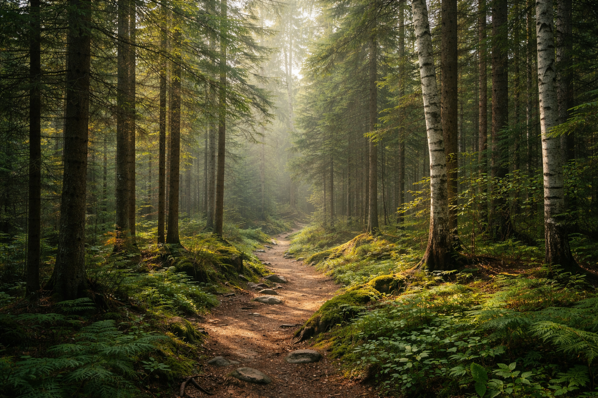

Silence naturel
Un environnement calme pour faire de l’espace dans le mental et retrouver plus de présence.
La forêt enveloppe le lieu d’une présence calme et rassurante. Les arbres, les sentiers et les sons naturels créent un espace idéal pour se déposer et sortir du rythme habituel.
C’est un endroit parfait pour pratiquer la marche consciente, ressentir l’ancrage et se reconnecter à une forme de simplicité apaisante.

Une énergie douce, stable et naturelle qui aide à ralentir et à se recentrer.
Un environnement calme pour faire de l’espace dans le mental et retrouver plus de présence.
Le contact avec la forêt aide à se sentir plus stable, posé et connecté au moment présent.
Un lieu vivant et enveloppant qui favorise la détente, l’écoute de soi et le ressourcement.

“Dans la forêt, tout ralentit doucement, et l’on retrouve une paix simple, profonde et vivante.”